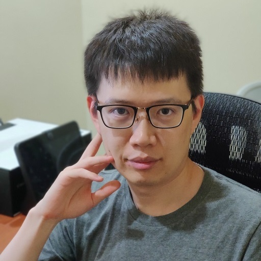

3D Scene Understanding for Vision, Graphics, and Robotics
CVPR 2021 Workshop, Virtual, June 19th, 2021
News
Due to the pandemic, our workshop will be virtual this year. We will host an online chat room for communication with the speakers and Q&A. Looking forward to meet you online!.
Invited talks and oral presentations will be presented live or by recorded videos in the same Zoom room, all of the talks will have live Q&A session, please refer to the Talks for recorded videos and more details.
All the events are hosted in the Zoom, click the raise hand button if you have questions during the talk. The speaker would either pause to answer your questions or leave them to the Q&A part.
Invited Speakers

Schedule (Pacific Time)
- 12:00 pm - 12:30 pm: Invited talk: Andrea Vedaldi - Learning 3D objects in the real world
- 12:30 pm - 13:00 pm: Invited talk: Roozbehm Mottaghi - Scene Understanding for Embodied Tasks
- 13:00 pm - 13:30 pm: Invited talk: Saurabh Gupta - Learning to Move and Moving to Learn
- 13:30 pm - 14:00 pm: Invited talk: Qixing Huang - Extreme Relative Pose Estimation via Scene Completion:
- 14:00 pm - 14:30 pm: Invited talk: Angjoo Kanazawa - Perceiving 3D Human Interactions in the Wild
- 14:30 pm - 15:00 pm: Invited talk: Tony Tung - The Next-Gen Virtual Humans
- 15:00 pm - 15:30 pm: Invited talk: Yi Ma-Learning to Detect Geometric Structures from Images for 3D Parsing
- 15:30 pm - 16:00 pm: Invited talk: Gordon Wetzstein - Neural Scene Representation and Rendering
- 16:00 pm - 16:30 pm: Invited talk: Dhruv Batra
Overview
The goal of this workshop is to foster interdisciplinary communication of researchers working on 3D scene understanding (computer vision, computer graphics, and robotics) so that more attention of the broader community can be drawn to this field. Through this workshop, current progress and future directions will be discussed, and new ideas and discoveries in related fields are expected to emerge.
Specifically, we are interested in the following problems:
- Datasets: What is a desired yet manageable breadth for a dataset to serve various tasks at the same time and provide ample opportunities to combine problems?
- Representations: What are representations most suitable for a particular task like reconstruction, physical reasoning, etc.? Can a single representation serve all purposes of 3D scene understanding?
- Reconstruction: How to build efficient models which parse and reconstruct the observation from different data modalities (RGB, RGBD, Physical Sensor)?
- Reasoning: How to formulate reasoning about affordances and physical properties? How to encode, represent and learn common sense?
- Interaction: How to model and learn the physical interaction with objects within the scene?
- Bridge of the three fields: How to facilitate research to connect among vision, graphics, and robotics via 3D scene understanding?
Organizers
 |
 |
 |
|
| Siyuan Huang* (UCLA) | Chuhang Zou* (UIUC) | Hao Su (UCSD) | Alexander Schwing (UIUC) |
|  |  |
 |
|
| Yuanlu Xu (Facebook) | Jiajun Wu (Stanford) | Angjoo Kanazawa (UCB) | Yixin Zhu (UCLA) |
Senior Organizers
 |
 |
 |
|
| David Forsyth (UIUC) | Derek Hoiem (UIUC) | Leonidas Guibas (Stanford) | Song-Chun Zhu (UCLA) |